猪肝血红素铁含量很高，容易吸收，同样的，维生素A也非常丰富，同时富含维生素B2、B12、叶酸、锌、硒。
注意控制频率，不可多吃
维生素A是脂溶性的，吃多了会在体内蓄积，一次吃太多，或者长期频繁吃，容易维A摄入过量。
胆固醇含量偏高，高血脂人群少吃；嘌呤中等，尿酸偏高、痛风人群尽量少吃。
一周 1～2 次，每次 40～50g 就够了。很久吃一次的，一次吃100g也是可以的。
挑选
颜色红褐色、均匀有光泽的，新鲜；按着紧实有弹性、能回弹的，是好肝。
暗沉发黑，异味，软烂、黏手的，放久了。
烹饪
清香脆嫩，可以清炒、白灼。
处理
- 切片，加入面粉、盐，抓拌2、3分钟，清水反复抓洗，泡水15-20分钟，水变红了换水，泡到血水析出；
猪肝很新鲜、颜色红润，没有发黑发暗，没有很重的腥臭味，只是少量血水，切片后，加入一大把盐抓个1分钟，然后静置3分钟，再用水冲洗干净，把表面血水冲掉，沥干即可； - 腌制，加蚝油、盐、胡椒粉、玉米淀粉，抓拌均匀，再淋上一层油，拌匀。
腌制处理后的猪肝，炒出来才会嫩，不会发柴，口感差。
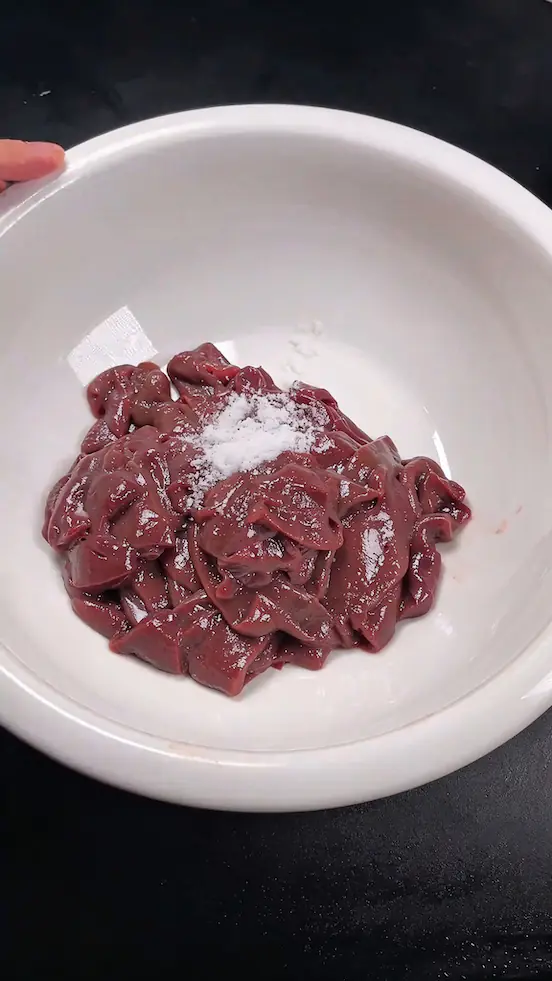
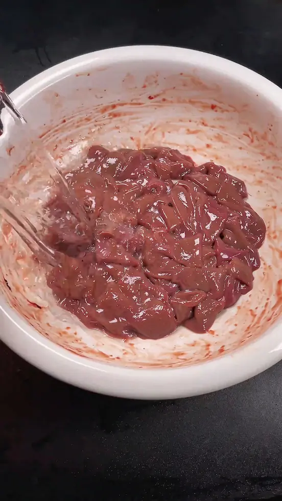
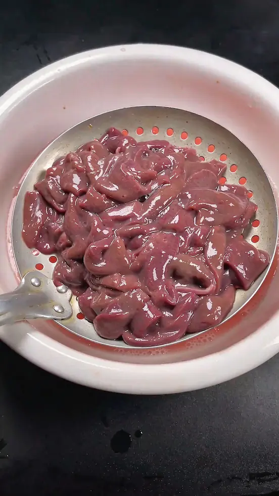
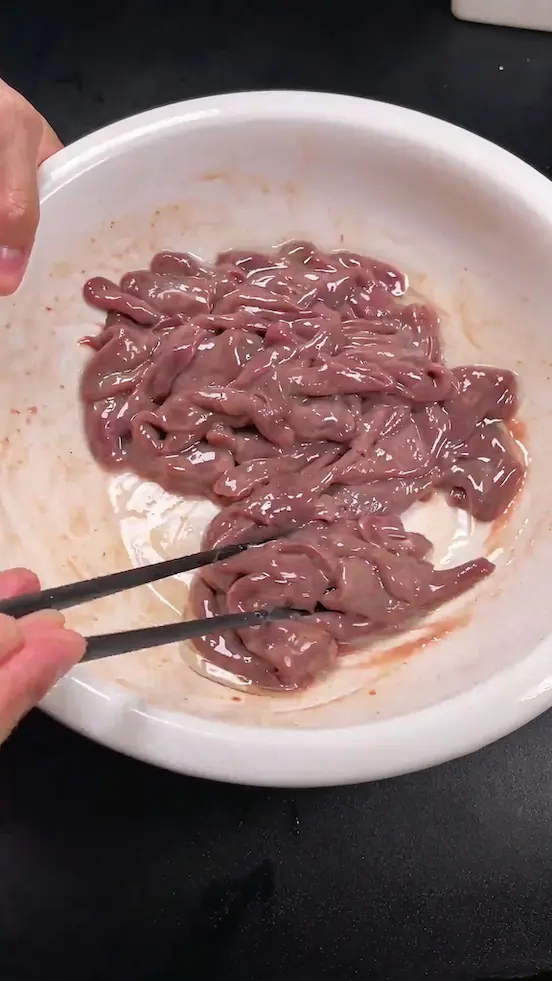
炒菜做法
- 猪肝可以先焯水、或过油、或下锅炒至8成熟，然后捞出备用，等后续的配菜炒快熟的时候，加入猪肝，大火翻炒翻炒即可出锅；
- 也可以先炒配菜，炒一会大概三分熟的时候，直接放入猪肝，一块炒熟出锅。
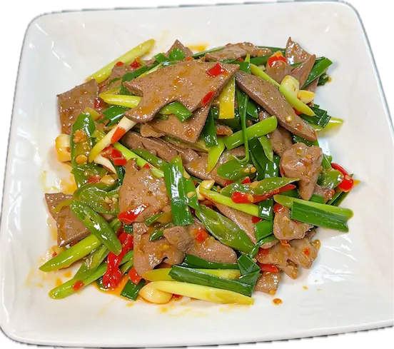
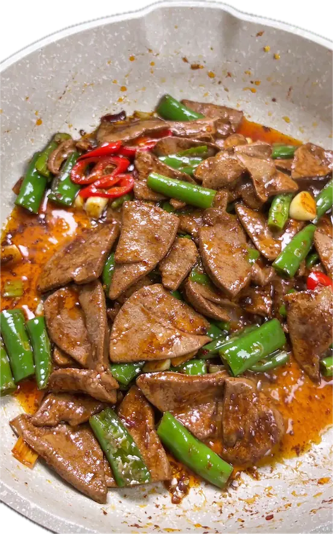
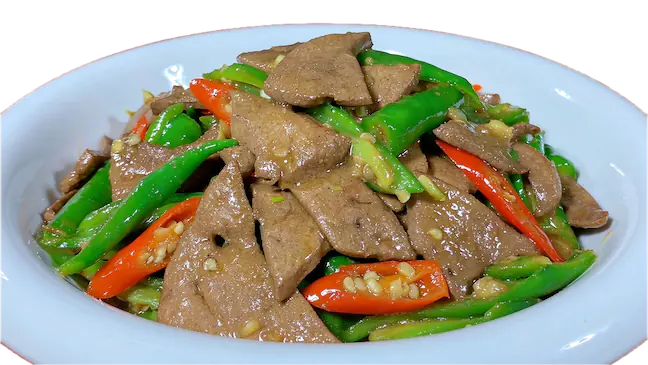
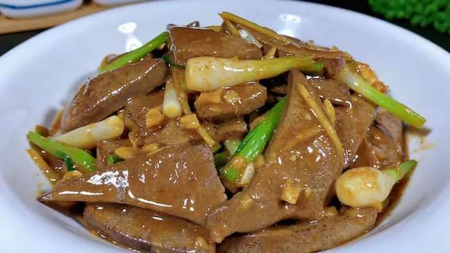
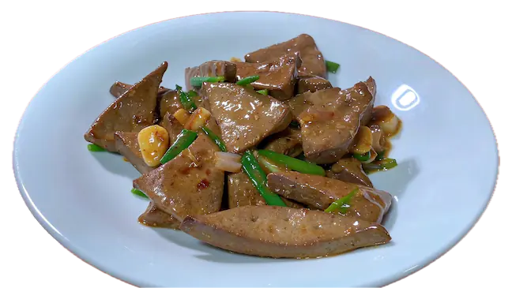
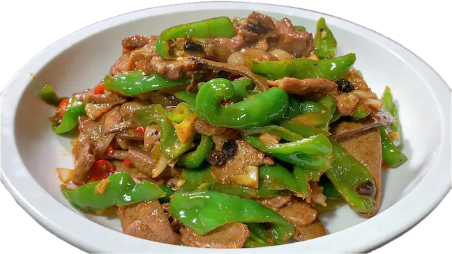
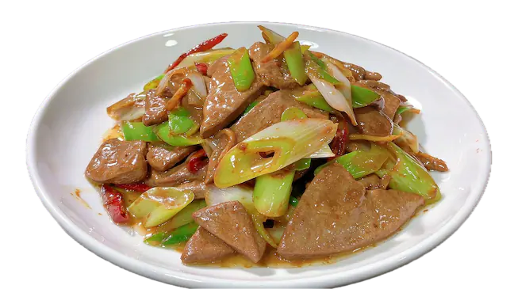
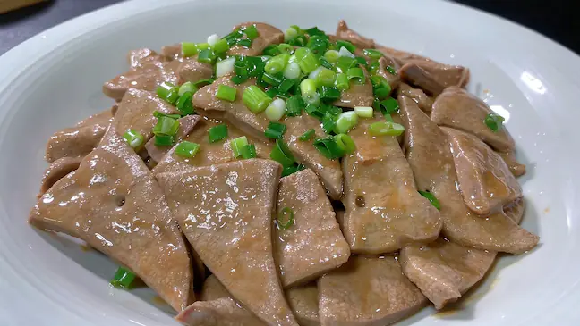
上面几道菜做法相似，这里说 白灼葱油猪肝
- 起锅烧水，加入姜、葱段，猪肝焯水至熟，控干水分，捞出；
- 淋入酱汁 （前面猪肝腌制过，这里可以简单加点生抽酱油），搅拌均匀；
- 撒上葱花，淋入热油，完成。
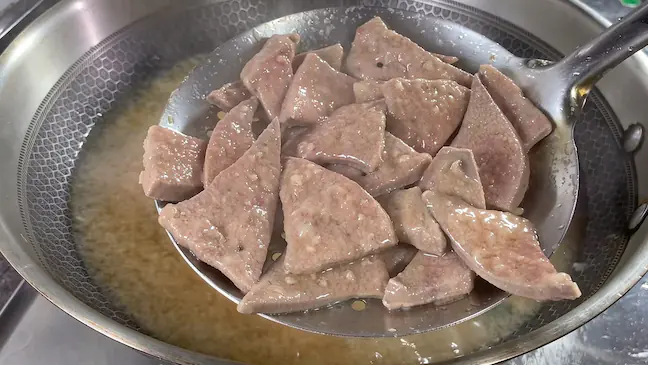
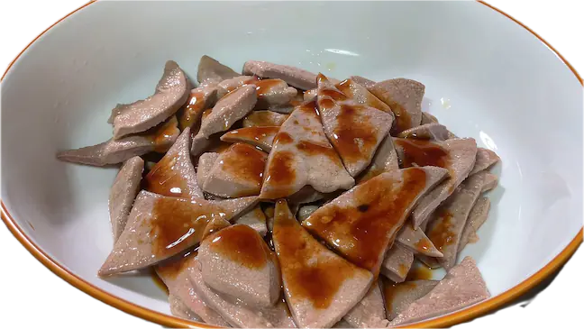
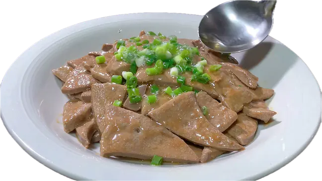
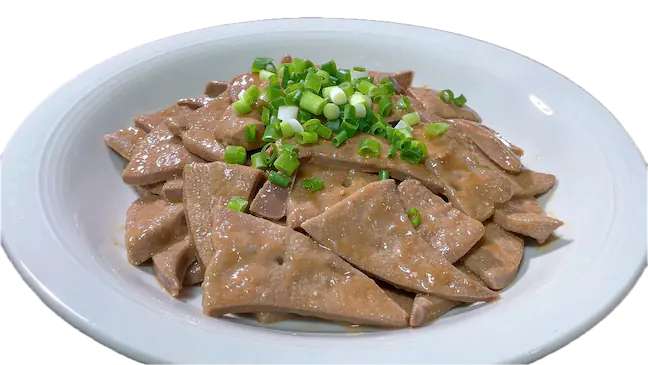